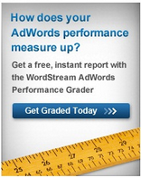

- Products
- Learn SEM
- Blog
- Support
- AdWords Grader
WordStream Internet Marketing Software
WordStream for PPC
Drive More Profits Through PPC!
Get Started with WordStream's Powerful PPC Platform Today
PPC - Achieve More Efficient Pay-per Click (PPC) Marketing
PPC (pay-per click) search marketing software offers a means for accomplishing two core requirements for PPC optimization:
- PPC Automation - While it would be impossibile (and inadvisable!) to automate every aspect of pay-per-click advertising automating away redundant, time-consuming tasks affords you a means of increasing productivity. Often, this means being able to produce an amount of work that would otherwise have been unachievable for you and your business.
- PPC Management - PPC management refers to the maintenance and prioritization of paid search marketing tasks. Being about to oversee various aspects of your account while assigning each item on a seemingly endless to-do list an appropriate value can make or break an online ad campaign.
WordStream's PPC software is specifically designed to aid in these two PPC search engine marketing areas. This page will show you both the processes the software is automating for you, and the best course of ation to take where workflow is concerned.

Drive More Profits Through PPC - Try Our Platform FREE
Get instant access to WordStream's innovative Quality score and Account Management tools through our FREE 7-day Trial. Risk Free, No Credit Card Required and No Automatic Sign-ups.
Automation And Your PPC Search Campaign
Creating an effective AdWords campaign for search requires a mass of time and effort. WordStream is built to help productize pay-per-click campaign labor while recognizing that only certain tasks should be automated for you. Rather than being a